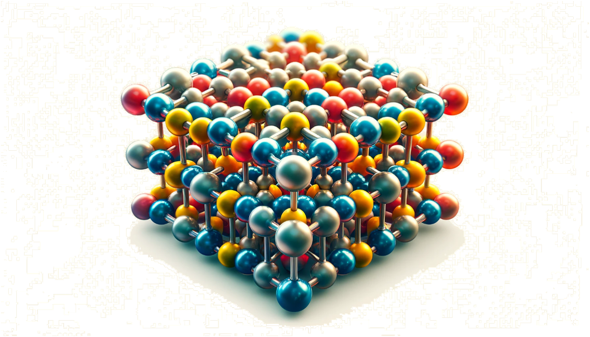

Steels and High Entropy alloys
Project Description
Steels and high entropy alloys are very important engineering materials. Understanding the phase separation and seggregation mechanisms in these alloys is extremely complex. And controlling them is even more challenging. However, it is critical to evaluate and understand the thermodynamics of these alloys. In this project, we have designed several thermo-mechanical treatments and characterization routines to understand the influence of various material defects and their interactions with wide range of alloying elemnts used in these materials.
Related Publications
- "Understanding atom probe's analytical performance for iron oxides using correlation histograms and ab initio calculations" - New Journal of Physics Mar 2024. View Publication
Field evaporation from ionic or covalently bonded materials often leads to the emission of molecular ions. The metastability of these molecular ions, particularly under the influence of the intense electrostatic field (10^10 Vm-1), makes them prone to dissociation with or without an exchange of energy amongst them. These processes can affect the analytical performance of atom probe tomography (APT). For instance, neutral species formed through dissociation may not be detected at all or with a time of flight no longer related to their mass, causing their loss from the analysis. Here, we evaluated the changes in the measured composition of FeO, Fe2O3 and Fe3O4 across a wide range of analysis conditions. Possible dissociation reactions are predicted by density-functional theory (DFT) calculations considering the spin states of the molecules. The energetically favoured reactions are traced on to the multi-hit ion correlation histograms, to confirm their existence within experiments, using an automated Python-based routine. The detected reactions are carefully analysed to reflect upon the influence of these neutrals from dissociation reactions on the performance of APT for analysing iron oxides.
- "A Machine Learning Framework for Quantifying Chemical Segregation and Microstructural Features in Atom Probe Tomography Data" - Microscopy and Microanalysis/strong> Aug. 2023. View Publication
The paper introduces a multi-stage machine learning strategy that semi-automates this process by initially transforming APT data into voxels for composition analysis, followed by clustering to classify compositions and segment the microstructure in real space. This approach is showcased with a Sm–(Co,Fe)–Zr–Cu alloy, allowing for refined segmentation and detailed mapping of composition and microstructure, especially focusing on disentangling complex, intertwined precipitate phases using both unsupervised and trained machine learning methods.
- "Advanced data mining in field ion microscopy" - Materials Characterization. Mar. 2018. View Publication
Field ion microscopy (FIM) is a technique that captures images of individual surface atoms using a strong electric field, but its broader adoption has been limited due to inadequate image processing and data extraction tools. Recent enhancements in imaging technologies and data mining, particularly through machine learning approaches, have sparked renewed interest in FIM for materials characterization, including the automated detection of atoms and lattice defects. This research involves the exploration of various machine learning algorithms and advanced image processing to improve data extraction from FIM images, discussing the results, limitations, and potential applications in enhancing spatial resolution through energy minimization techniques.